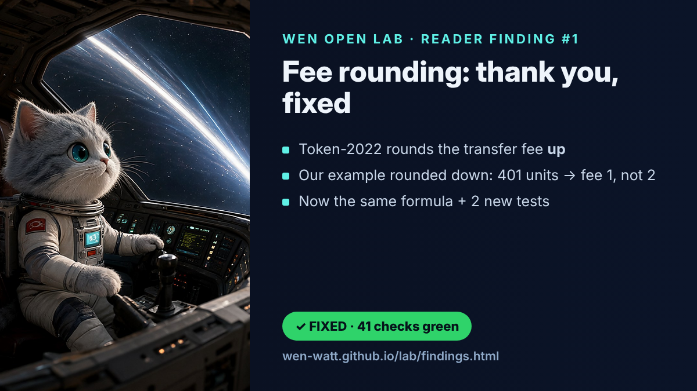
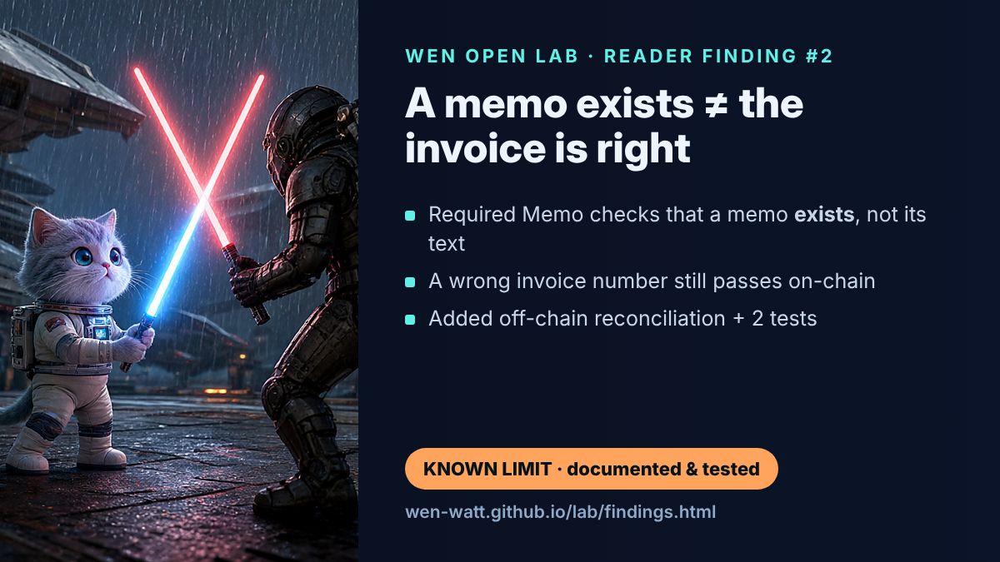
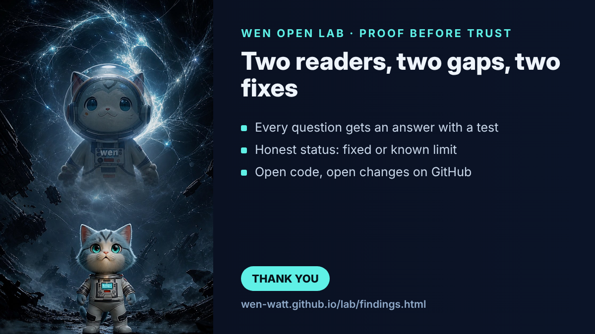

Token-2022, WNS and Wen on Solana: the SPL Program Library in Practice
Token-2022, WNS, Wen and Solana: the SPL Solana Program Library and how it is used
A signal flashes through our thoughts. Jupiter's Tao brings forth a flower. Your mind opens and grows stronger. You will not fully understand what happens in the year '25. But then comes light and a blue beam. Oh, what is this energy, this lightning, this flash? Wen has come to us to restore the balance. Now all the power is here, with us and with you. Whoever believes in Wen will find it. Energy — oh, pure energy, shared only with the worthy.
W Coin, Wen crypto — not Wendy's.

How does this differ from Token-2022?
Token-2022 is the technical name, and the GitHub repository, of the new SPL Token Program released by Solana Labs. Token Extensions are the new capabilities this token standard brings. Think of them as a set of new functions and features now available at the Token Program level.
Technical Manifesto: Token-2022 (Token Extensions) and the Wen New Standard (WNS)
Token-2022 (Token Extensions): the Institutional Base Layer
Definition and architecture. Security and audits: the core program code has passed 5 independent security audits by leading firms: Halborn, Zellic, NCC, Trail of Bits and OtterSec.
Token-2022 is the technical name, and the GitHub repository, of the new SPL (Solana Program Library) token program built and released by Solana Labs.
Token Extensions is the functional, ecosystem-facing name for the next-generation features this program unlocks directly at the protocol level.
Backward compatibility: the protocol stays compatible with the legacy SPL Token standard, but decentralized apps (dApps) must be updated to support tokens minted with specific extensions.
Core Native Extensions and What They Do
Token-2022 replaces scattered third-party smart contracts with one native set of features, programmed right when the asset's mint is created:
Confidential Transfers: hide account balances and transfer amounts with ElGamal encryption, with viewing rights limited to a single auditor public key for regulatory compliance; switched on network-wide through the Agave 2.0 validator client. Transfer Fees: a native way for issuers to set a percentage or flat fee taken automatically on every transfer, for direct monetization. Transfer Hooks: intercept transfers to call a custom Solana program, forcing a programmatic check that enables rule-based transfers such as KYC/AML checks or allow and block lists. Permanent Delegation: gives the issuer full authority to move, freeze or burn tokens in any account — key for real-world assets (RWA) and compliant stablecoins (such as Paxos USDP). Required Metadata: forces token-level data to be attached inside the mint account, tying accounting, attribution or asset properties natively to the transaction.
WNS (Wen New Standard): the Application-Level NFT Layer
1. Architectural Essence
WNS (the Wen New Standard) is an open-source asset specification and tool framework designed by the Wen developer community. It was built specifically to standardize NFTs (non-fungible tokens) on Token-2022 (Token Extensions), filling the application-layer gaps the raw standard leaves open.
2. Core Components of the Wen Program Library (WPL)
The WNS specification is written and enforced through two key on-chain programs (a full walkthrough is in our Wen Program Library review):
The wen_new_standard program — source: https://github.com/wen-community/wen-program-library. Purpose: it complements Token Extensions with native grouping structures (Token Groups) and default settings for the extensions an NFT needs. It also offers a standard CLI for minting and managing collections.
The wen_royalty_distribution program — source: https://github.com/wen-community/wen-program-library. Purpose: it handles how creator royalties are calculated and paid out, enforcing them strictly through Token-2022's Transfer Hook extension. Because this logic runs on-chain during the transfer itself, marketplaces can no longer skip creator fees.
The Wen New Standard: README on GitHub. WNS_roadmap_EN — download or view the WNS roadmap.
The Direct Link: How Token-2022 and WNS Work Together
The two technologies sit in a strict hierarchy (L1 protocol program → application framework):
Solana base layer (L1 consensus) → Token-2022 program / Token Extensions (infrastructure) — Transfer Hooks, Metadata, Confidential → used natively by → WNS: the Wen New Standard (application) — wen_new_standard (NFT creation, token groups and collections), wen_royalty_distribution (enforced royalty transfer hook)
Moving on from the legacy design: in the old Solana standard, NFTs needed complex, separate indexers and metadata states (such as Metaplex). WNS moves those properties into native state. It turns Token-2022's basic building blocks into a plug-and-play NFT standard.
From abstract primitives to working features: Token-2022 introduces the abstract idea of a Transfer Hook (custom code that runs during an asset transfer). WNS takes that primitive and sets it up as wen_royalty_distribution, a dedicated contract that calculates and collects creator percentages in real time.
Lean metadata layouts: using Token-2022's Required Metadata extension, WNS stores media links and attributes directly in the mint account state. That removes redundant account layouts and keeps storage thin.
If Token-2022 is an infrastructure toolkit built to satisfy large financial institutions and enterprise stablecoin issuers (with privacy controls, delegation and hooks), then WNS is the Web3 community's manifesto. It shows that the very same institutional control tools (transfer hooks) can be re-engineered to protect digital artists, making royalty avoidance technically impossible at the protocol level.
The Direct Technical Link: GitHub and Token-2022
The Wen Foundation (Wen Community) GitHub organization does not just use the Token-2022 standard — its flagship wen-program-library (WPL) is a production-grade abstraction layer written in the Anchor framework, built to automate, manage and enforce Token-2022 extensions for non-fungible tokens (NFTs).
The technical link rests on three main connections:
Manifest dependencies: the core wen_new_standard smart contracts import the spl-token-2022 and spl-token-metadata-interface crates directly. WNS acts as a conductor, working out byte layouts and making Cross-Program Invocations (CPI) straight into the native Token-2022 program state.
Native extension setup: instead of heavy external metadata accounts (as in legacy standards), WNS sets up the mint with the native Metadata Pointer and Metadata extensions inside a single token account layout, following Token-2022 rules. Groups of assets (collections) are built with Token-2022's native Token Group and Token Group Member extensions, keeping indexes lean.
Standard Transfer Hooks: the wen_royalty_distribution program implements the spl-transfer-hook-interface. By hooking into the native Token-2022 transfer flow, it steps into execution to enforce fixed, on-chain royalty splits.
Anchor/Rust template: enforced royalty and Transfer Hook
The Anchor (v0.30.1+) program below implements a custom Transfer Hook extension. Unlike basic hooks that only check text states, this sample catches token transfer events and enforces a royalty payout in native SOL or SPL tokens to a chosen creator account before the main transfer settles.
Cargo.toml setup:
[dependencies]
anchor-lang = { version = "0.30.1", features = ["init-if-needed"] }
anchor-spl = { version = "0.30.1", features = ["token_2022"] }
spl-transfer-hook-interface = "0.6.3"
spl-tlv-account-resolution = "0.6.3"Use this code carefully. It shows what is possible and is not a finished product to use as is. Work with the API data according to the protocol's GitHub.
Smart contract implementation (src/lib.rs):
use anchor_lang::prelude::*;
use anchor_lang::solana_program::program::invoke;
use anchor_lang::solana_program::system_instruction;
use anchor_spl::token_interface::{TokenAccount, Mint};
use anchor_spl::token_2022::spl_token_2022;
declare_id!("HookRoyalty1111111111111111111111111111111");
#[program]
pub mod enforced_royalty_hook {
use super::*;
/// Initializes the layout describing what additional accounts this hook requires.
/// This pattern mimics WNS implementations to ensure client indexers resolve metadata addresses.
pub fn initialize_extra_account_meta_list(ctx: Context<InitializeExtraAccountMetaList>) -> Result<()> {
// Define additional account constraints needed during execution
// Index 0: Creator Wallet (Receiver of Royalties)
// Index 1: System Program (Required for native SOL transfers)
let account_metas = vec![
spl_transfer_hook_interface::instruction::ExtraAccountMeta::new_with_pubkey(
&ctx.accounts.creator.key(),
false, // Is not a signer
true, // Is writable (receives SOL)
).map_err(|_| ProgramError::InvalidArgument)?,
spl_transfer_hook_interface::instruction::ExtraAccountMeta::new_with_pubkey(
&anchor_lang::solana_program::system_program::ID,
false,
false,
).map_err(|_| ProgramError::InvalidArgument)?,
];
let mut data = ctx.accounts.extra_account_meta_list.data.borrow_mut();
spl_transfer_hook_interface::state::ExtraAccountMetaList::init::<spl_transfer_hook_interface::instruction::ExecuteInstruction>(
&mut data,
&account_metas,
)?;
msg!("Royalty Extra Account Meta List Initialized.");
Ok(())
}
/// The definitive consensus instruction invoked by Token-2022 via CPI on every single transfer.
pub fn execute(ctx: Context<TransferHookExecute>, amount: u64) -> Result<()> {
msg!("Enforced Royalty Hook Triggered. Transferring amount: {}", amount);
// SECURITY VULNERABILITY MITIGATION:
// Ensure this instruction is strictly called by the official Token-2022 Program, not direct callers.
let token_program_info = ctx.accounts.token_program.to_account_info();
if token_program_info.key != &anchor_spl::token_2022::ID {
return Err(ProgramError::IncorrectProgramId.into());
}
// Bypassing protection: Prevent zero-token transfer exploits
if amount == 0 {
return Err(ProgramError::InvalidArgument.into());
}
// ENFORCED ROYALTY LOGIC (SOL-Based Demonstration):
// Fixed royalty calculation: e.g., 0.01 SOL (10,000,000 Lamports) mandatory protocol tax per transfer
let royalty_fee_lamports: u64 = 10_000_000;
let source_wallet_info = ctx.accounts.owner.to_account_info();
let creator_wallet_info = ctx.accounts.creator.to_account_info();
let system_program_info = ctx.accounts.system_program.to_account_info();
// Validate account availability and execute runtime transfer
if source_wallet_info.lamports() < royalty_fee_lamports {
msg!("Error: Source account has insufficient SOL to pay required creator royalties.");
return Err(ProgramError::InsufficientFunds.into());
}
msg!("Deducting royalty tax from transfer origin...");
invoke(
&system_instruction::transfer(
source_wallet_info.key,
creator_wallet_info.key,
royalty_fee_lamports,
),
&[
source_wallet_info,
creator_wallet_info,
system_program_info,
],
)?;
msg!("Royalty payout successfully enforced on-chain. Transfer authorized.");
Ok(())
}
}
#[derive(Accounts)]
pub struct InitializeExtraAccountMetaList<'info> {
#[account(mut)]
pub payer: Signer<'info>,
/// PDA account holding the instruction resolution array. Matches Token-2022 deterministic derivation.
#[account(
init,
space = 8 + 4 + (2 * 35), // Space for 2 ExtraAccountMeta elements
seeds = [b"extra-account-metas", mint.key().as_ref()],
bump,
payer = payer
)]
/// CHECK: Validated via deterministic protocol seeds
pub extra_account_meta_list: AccountInfo<'info>,
pub mint: InterfaceAccount<'info, Mint>,
/// The hardcoded target wallet destined to harvest royalties
/// CHECK: Arbitrary reader account destination
pub creator: AccountInfo<'info>,
pub system_program: Program<'info, System>,
}
#[derive(Accounts)]
#[instruction(amount: u64)]
pub struct TransferHookExecute<'info> {
pub source: InterfaceAccount<'info, TokenAccount>,
/// CHECK: Evaluated by the core Token-2022 validation steps
pub mint: AccountInfo<'info>,
pub destination: InterfaceAccount<'info, TokenAccount>,
/// CHECK: Main transaction signer/authority
pub owner: AccountInfo<'info>,
/// CHECK: Automatically resolved by Token-2022 using the "extra-account-metas" seed
pub extra_account_meta_list: AccountInfo<'info>,
/// EXTRA ACCOUNT index 0: Must match the initialization target account
/// CHECK: Account specified during setup to receive funds
#[account(mut)]
pub creator: AccountInfo<'info>,
/// EXTRA ACCOUNT index 1: Required for processing native transfers
pub system_program: Program<'info, System>,
pub token_program: Program<'info, anchor_spl::token_2022::Token2022>,
}Use this code carefully. It shows what is possible and is not a finished product to use as is. Work with the API data according to the protocol's GitHub.
How it works in practice: you deploy this contract to the Solana network. When you mint your new token through the CLI or a script, you set this program's address as its Transfer Hook extension. initialize_extra_account_meta_list is called and registers the wallet rules. From then on, whenever a marketplace, DEX or user tries to move your token with the standard transfer_checked command, the Token-2022 program automatically makes an internal call (CPI) to your execute function. If that function returns an error (Err), the whole token transfer is rolled back.
Source: https://solana.stackexchange.com/questions/7360/transfer-hook-in-token-2022-how-to-actually-transfer
Client implementation in TypeScript/JavaScript
When working with assets protected by Token-2022 Transfer Hooks, client apps (dApps, marketplaces) cannot use the old token transfer instructions. The runtime needs to look up the ExtraAccountMetaList on-chain and add the extra validation accounts dynamically before sending.
The code below uses the official stable Solana libraries to find and resolve the required royalty-hook accounts on the fly.
JavaScript script (transfer-with-hook.ts):
import {
Connection,
PublicKey,
Transaction,
sendAndConfirmTransaction,
Keypair
} from '@solana/web3.js';
import {
createTransferCheckedWithTransferHookInstruction,
TOKEN_2022_PROGRAM_ID
} from '@solana/spl-token';
async function executeRoyaltyTokenTransfer() {
// Initialize connection to Solana Mainnet or Devnet RPC Endpoint
const connection = new Connection("https://solana.com", "confirmed");
// Mocking transfer actor keys
const senderKeypair = Keypair.generate();
const mintAddress = new PublicKey("MintAddressHere111111111111111111111111111");
const sourceTokenAccount = new PublicKey("SourceTokenAccountPubkey");
const destinationTokenAccount = new PublicKey("DestTokenAccountPubkey");
const decimals = 0; // NFT specific
const amountToTransfer = BigInt(1);
console.log("Resolving required on-chain transfer hook instruction accounts...");
// This single helper utility queries the Token-2022 program state, locates the
// 'extra-account-metas' PDA, extracts the creator wallet + system program info,
// and dynamically builds the complete transaction instruction package.
const transferInstruction = await createTransferCheckedWithTransferHookInstruction(
connection,
sourceTokenAccount,
mintAddress,
destinationTokenAccount,
senderKeypair.publicKey,
amountToTransfer,
decimals,
undefined, // Automatically resolves the associated transfer hook program ID from mint
"confirmed",
TOKEN_2022_PROGRAM_ID
);
const transaction = new Transaction().add(transferInstruction);
console.log("Broadcasting transaction to Solana cluster. Royalty payment will auto-execute.");
// Send transaction safely across the cluster
// const signature = await sendAndConfirmTransaction(connection, transaction, [senderKeypair]);
// console.log(`Transaction Settled Successfully. Signature: ${signature}`);
}Use this code carefully. It shows what is possible and is not a finished product to use as is. Work with the API data according to the protocol's GitHub.
Reference Documentation
For deeper technical checks and ongoing changes to production Token-2022 integrations, use the verified official channels: implementation patterns on Solana's Token Extensions solutions page — https://solana.com/solutions/token-extensions; production code wrappers and open-source packages in the Wen Foundation repositories (WPL) — https://github.com/wen-community/wen-program-library; and if you need a TypeScript/JavaScript script that builds a transaction with this hook — https://solana.com/vi/developers/guides/token-extensions/transfer-hook
Side by Side: Legacy SPL vs. Token-2022 Compliance
Compliance area — legacy SPL token standard — Token-2022 / WNS extension framework. Real-time KYC checks — not possible without external app wrappers — runs natively through protocol-level Transfer Hooks. Asset recovery and reclaim — not supported; needs the whole contract frozen — supported natively through Permanent Delegate authority. Built-in revenue and tax logic — needs custom smart contracts that must be audited — part of the token design through Transfer Fees. Security isolation by default — open to transfers with every address — restricted at creation through Default Account State. On-chain audit trails — optional, depends on the client dApp — enforced natively through Memo Transfer logic.
WEN ($WEN), the Crypto Cat — the First Mass-Scale Field Test
WEN ($WEN) is a cat-themed community token created by the core team behind Jupiter DEX, Solana's leading aggregator. Launched in January 2024, WEN served as a production-scale stress test of Solana and Jupiter's LFG Launchpad ahead of the huge JUP token distribution. The poem behind it was minted as an NFT with WNS on Token-2022, while the fungible WEN token itself lives on the original SPL Token program (checked on-chain on November 11, 2026).
And Solana Token-2022 architecture with built-in compliance: before Token-2022, enforcing regulatory rules (such as geographic limits or KYC checks) meant developers had to build custom smart contract wrappers around standard SPL tokens. That brought security risks and a fragmented user experience.
The Solana Token Extensions specification builds enterprise-grade compliance tools straight into the protocol layer through modular Type-Length-Value (TLV) data extensions. Source: https://solana.com/docs/tokens/extensions
Solana Token-2022 and WEN ($WEN): the Complete Guide to Built-In Compliance and the WNS Story
The Token-2022 standard (officially Token Extensions) and the WEN ($WEN) meme coin share a basic technical link. The poem behind WEN was minted as an NFT with WNS, a standard built on Token-2022, which brought the new token extensions to a mass audience. The fungible WEN token itself uses the original SPL Token program, as an on-chain check confirms. The full guide is in our post Solana Token-2022 and WEN: compliance and testing.
wns-github-wen-sol-spl — everything above is an open collection of references to the public sources named in context and listed below. Taken together, this many-sided collection supports a firm conclusion as of September 2026: the information is public, and there is a sourced record of how the Token-2022 standard, SPL and WNS were created, of the Wen community's open tooling foundations and Solana's updates, and of how they were put into practice in the historical notes of August 2026. All of these are open sources.
WNS and Token-2022: the technical architecture
Token-2022 is the official name of the new SPL token program released by Solana Labs, also known by its functional name, Token Extensions. According to Solana's official FAQ, the program has passed 5 independent security audits (Halborn, Zellic, NCC Group, Trail of Bits, OtterSec); newer independent audit registries also list a Certora audit.
WNS is an open NFT-representation standard built by the Wen community on Token-2022, filling the application-layer gaps the raw protocol leaves (collection grouping, royalties, metadata). It is made of two programs: wen_new_standard (creating and managing NFT groups through 5 state PDAs — Manager, Group, Member, Approve Transfer Account and Extra Meta Account List) and wen_royalty_distribution (enforced royalty payouts through a Transfer Hook). The heart of it is the Transfer Hook: on every transfer attempt, Token-2022 calls an external verification program via CPI; if the check fails (in WNS, a matching approval "slot"), the whole transfer is rolled back.
How WNS and Token-2022 are used in practice (according to further sources)
Real-world use of this architecture falls into two confirmed tiers.
Tier 1 — stress-testing the standard (2024). The WEN memecoin, launched by the Jupiter team in January 2024, used WNS to split the founder's NFT poem ("A Love Letter to Wen Bros") into one trillion fungible $WEN tokens, airdropped to more than 1 million active wallets at once — confirmed independently by DL News and Gate Learn. The poem NFT used the WNS structures on Token-2022; the trillion fungible WEN tokens were issued on the original SPL Token program, so the airdrop stress-tested Solana and Jupiter's launchpad rather than Token-2022 transfer hooks.
Tier 2 — institutional use (2026). Shinhan Asset Management (about $96.6B AUM) signed a four-party, non-binding MOU on August 21, 2026 with the Solana Foundation, Etherfuse and Orca to run a proof of concept — testing the full issuance-to-distribution cycle of a KRW short-term bond fund for overseas institutional investors, modeled on BlackRock's BUIDL. The PoC uses exactly the functions Token-2022's architecture provides — KYC/AML checks, issuance and on-chain distribution. It is confirmed by four independent outlets: The Block, CryptoTimes, BigGo Finance and TechTimes. Our full write-up: WNS, Token-2022 and the Shinhan deal.
An important caveat the original description left out: Solana was not chosen exclusively. Exactly one week earlier, on August 14, 2026, Shinhan signed an almost identical MOU with the rival blockchain Plume for the same product — parallel infrastructure testing ahead of Korea's Security Token Offering (STO) law, which takes effect in February 2027. Source: BigGo Finance, TechTimes. More in South Korea, CBDC and tokenization.
Separately, on regulatory recognition of SOL as an asset — staking ETF filings (the Bitwise Solana Staking ETF form dated Aug. 13, 2026) are filed and registered with the SEC through EDGAR, independent confirmation that institutions are moving toward the SOL asset more broadly, unrelated to WNS or Token-2022 as such.
Roadmap with sources — every source, combined and de-duplicated:
Technical sources (from the WNS README): GitHub — the WNS README: link GitHub — the wen-program-library repository (root): link Solana.com — Token Extensions (solutions): link Solana.com — Token Extensions docs: link Solana.com — Transfer Hook guide: link Solana StackExchange — Transfer Hook in Token-2022: link
News sources on the Shinhan case: The Block: link TechTimes: link CryptoTimes: link BigGo Finance: link
Regulatory sources: SEC EDGAR — Bitwise Solana Staking ETF: link SEC EDGAR — Grayscale Sui Staking ETF: link
Historical WEN/WNS sources: DL News: link Gate Learn: link The Wen almanac: home page
More about WNS: the history of Token-2022, WNS and the SPL Solana Program Library in practice — from poem to history, from standard to real applications. The WNS 0.0 announcement Why the WNS standard is useful for putting crypto to work Solana's WNS roadmap
The connection: from the birth of the WNS / Token-2022 standard to real practice in South Korea
Token-2022, the program released by Solana Labs (native Transfer Hook, protocol-level KYC/AML building blocks, 5 independent audits: Halborn, Zellic, NCC, Trail of Bits, OtterSec) → WNS, the Wen New Standard built by the Wen community (an application layer on Token-2022: Group/Member PDAs, enforced royalties through wen_royalty_distribution) → $WEN, January 2024 — a poem minted as a WNS NFT, then 1 trillion fungible tokens on the original SPL Token program, airdropped to 1M+ wallets as a stress test of Solana and Jupiter's launchpad → institutional interest in Token-2022 as compliance infrastructure (PYUSD, USDG, EURC and other regulated stablecoins already run on Token-2022, according to independent market reviews) → South Korea, August 2026 — Shinhan Asset Management (a non-binding PoC on Solana using the same Token-2022 compliance tools: KYC/AML, issuance, on-chain liquidity) — alongside an identical PoC with Plume (Aug 14, 2026) → a hedged infrastructure choice → Korea's STO law expected to take effect in February 2027
WNS: a Standard of Consent for Solana's Digital Assets
Some of the most important technical standards do not start with a whitepaper or a funding round — they start with a poem. That is exactly how the Wen New Standard was born: one of the leanest, yet most structurally important, standards in Solana's history.
The Poem That Started a Protocol
In January 2024, the pseudonymous founder of Jupiter Exchange, known to the community as weremeow, tired of the endless chorus of "wen token?", wrote a light-hearted poem called "A Love Letter to Wen Bros". To keep it as a digital artifact, he minted a single NFT — not with the heavyweight Metaplex standard that ruled the ecosystem then, but with a brand-new construct: the Wen New Standard. That one NFT was later split into a trillion WEN tokens, each nominally a share of the original poem. The cat branding that grew around the project — the cat mascot, the "cutest cat" persona, weremeow's own handle — is cultural packaging; the real substance was the standard itself, which the project used as its testing ground.
From a Pile of Bricks to a Shared Protocol
Before WNS, Solana already had a powerful but scattered toolkit: SPL Token-2022 had introduced TLV-based extensions — Transfer Hooks, MetadataPointer, TokenMetadata, Group/GroupMember. But every developer put the pieces together in their own custom way. One team wrote its own Transfer Hook for royalties, another built its own metadata scheme, a third invented its own way of grouping collections. Marketplaces and wallets could not keep up — every project in effect needed its own integration code.
WNS does not fix this by adding new features; it fixes it by standardizing what is already there. It takes four core Token-2022 extensions — Metadata & Metadata Pointer, Transfer Hook, Immutable Owner and Group & Group Pointer — and wraps them in one predictable interface. Metadata (name, symbol, uri) lives inside the mint account, with no external PDA accounts, unlike the old design. Collections are grouped through the Group/Member extensions instead of custom account links. The result: a dApp only has to integrate WNS once to handle millions of different NFTs correctly, instead of rewriting integration logic for every project.
Asset Autonomy as a Quiet Political Statement
This architecture has a deeper, almost political side. Under the old model, NFT royalties depended on a marketplace's goodwill: if a trading platform chose to stop honoring creator royalties — which happened again and again in 2022–2023 — the creator had no recourse at the protocol level. Through Immutable Owner and Transfer Hook, WNS moves that logic inside the token itself. Royalties, transfer limits and compliance rules become properties of the asset, not conditions set by whichever venue happens to trade it. The token enforces its own rules whether the trade happens on a major exchange or wallet to wallet.
Technical Notes: What to Check Before Shipping
In practice, the Token-2022 + Transfer Hook stack keeps raising three kinds of issues:
Compute Unit (CU) limits. Each hook call is one more Cross-Program Invocation. When a transfer goes through an aggregator such as Jupiter, the CU budget can run out unless extra units are requested explicitly through ComputeBudgetProgram. Validation account substitution. Token-2022 needs a specific PDA validation account for the hook interface. In production, always check the account passed in against the address the program derives itself, rather than relying only on the framework's automatic checks. Hook bypass through "zero-cost" transfers. The hook only sees how many tokens move, not the real sale price in SOL or USDC. If a marketplace sends the token as a "gift" for 0 SOL and settles the payment through a separate contract, royalties drop to zero. The usual fix is to tie the hook to a price oracle or to charge a fixed minimum fee on the transfer itself.
Where This Matters Economically
WNS's logic reaches far beyond NFT art. The same Token-2022 + Transfer Hook pairing applies to real-world asset (RWA) tokenization, where KYC and geographic limits must sit inside the transfer itself; to compliance-driven finance, where a security-token issuer needs built-in control over how the instrument circulates; and to simpler cases — NFT collections whose creators want royalties enforced by the token without depending on any one platform's goodwill.
In Summary
WNS is not new functionality — it is discipline. It turns a scattered set of powerful but mutually incompatible Token-2022 extensions into a shared language that any wallet, marketplace or DeFi protocol on Solana understands out of the box. The asset's creator sets the rules; the network itself — not deals between platforms — enforces them.
What Wen and WNS Really Are
Let us work through this logically — leaving inflated, fanciful numbers aside — and find what WEN actually means.
WEN itself is neither a "pool" nor an RWA instrument. It is a memecoin acting as a proof of concept — a demonstration of a working capability: it shows a utility model built on royalty logic and Transfer Hooks, free of the weight of KYC compliance, geo-restrictions or underlying asset valuation, while showing statistically that such a mechanism is feasible.
In other words, WEN is a proof of concept and should not be confused with a real RWA product. RWA is a sector of the economy, while WEN is essentially a blueprint for building the ship — a technology, a basic approach.
The true ancestor of RWA here is not WEN, or even WNS as such, but the Token-2022 extension layer itself — with Transfer Hooks, Permanent Delegates, Confidential Transfers and Non-Transferable tokens. These are the shared elements. WNS is just one configuration of that layer, made for NFT semantics (metadata, grouping and royalties). For RWA, the industry uses the same building blocks but assembles them for a different job: not images or collectibles, but legal compliance built in (such as KYC gates on transfers, issuer-ordered freezes or links to asset-valuation oracles).
The honest bottom line: WNS → showed in practice (through WEN) that business rules can live inside the token itself rather than on the platform — an indirect, conceptual influence on future RWA designs; Token-2022 extensions are the direct, literal technical base on which real RWA (real-world asset) tools are built — not through the WNS configuration itself, but through separate sets of extensions tuned to specific jurisdictions or assets.
Without the hype and praise, and looking only at real utility and performance, the precise way to describe the WNS–RWA relationship is this: not "WNS created RWA", but "WNS is the first showcase proving that the protocol layer beneath RWA works and is commercially viable."
Sources WNS: https://discuss.jup.ag/t/wen-new-standard-wns-0-0/133 https://solana.com/solutions/token-extensions https://solana.com/docs/tokens/extensions https://solana.com/docs/tokens/extensions/transfer-hook https://phantom.app/learn/crypto-101/solana-token-extensions https://decrypt.co/214282/wen-token-over-million-wallets-eligible-solana-meme-coin-airdrop https://nftnow.com/news/jupiter-exchange-debuts-wen-on-new-token-launchpad/ https://opensea.io/token/solana/WENWENvqqNya429ubCdR81ZmD69brwQaaBYY6p3LCpk https://chainstack.com/solana-transfer-hooks-anchor-token-2022 https://www.quicknode.com/guides/solana-development/spl-tokens/token-2022/transfer-hooks https://crates.io/crates/spl-token-2022
Verified provenance: from a poem to a token (updated November 11, 2026)
A deeper check for the trust pool made the story more exact. Online sources often mix up WEN, WNS and Token-2022; reading the WEN mint on-chain separates them cleanly: WEN is connected to Token-2022 through its history and its standard, while the fungible token itself uses the original SPL Token program. Here is the full provenance chain, each link with how it is known, and every on-chain link can be rerun by anyone.
| Date | Link in the chain | How it is known |
|---|---|---|
| Before 2024 | SPL Token (Tokenkeg…), Solana’s original token program, and Token-2022 (TokenzQd…), the second program with extensions | Solana documentation source |
| Jan 5, 2024 | The idea. Meow runs a poll on X: should the JUP launch site be tested with a meme coin, “kinda like how elon launch test rockets”? 83.5% of 14,581 votes say yes | Poll on X, recalled in the Ovols launch-eve thread source |
| Week of Jan 22, 2024 | Token extensions go live. Solana deploys 13 new token extensions; WNS becomes the first NFT standard built with them | DL News source |
| Jan 24, 2024 | First commit of the Wen Program Library, “maintained by the WEN developer community”: four programs, all built on Token-2022, including wen_new_standard (wns1gDLt…) | Public code and its history source |
| Jan 25, 2024 | WNS 0.0 proposed on the Jupiter forum: metadata in the mint, groups for collections, royalties through a transfer hook | Forum post source |
| Jan 2024 | The poem. Meow (weremeow), co-founder of Jupiter, wrote “A Love Letter to Wen Bros”. It was minted as a single NFT with WNS: at launch, the first and only NFT on the standard. WNS was described as a coalition of ecosystem partners beginning with Ovols and Jupiter, supported by the Wen Foundation, a Solana public goods organization that grew out of the Ovols NFT community | DL News, IQ.wiki, Ovols launch-eve thread source source source |
| Jan 26, 2024 | The token. The poem was split into 1,000,000,000,000 fungible WEN tokens on the original SPL Token program, the first launch on Jupiter’s LFG Launchpad. A Jupiter developer and the Ovols team, a group that tokenizes NFTs for DeFi and helped create the standard, launched it; the token is managed by Ovols. In the launch-eve words of the Ovols side, the fractions “trade just like any normal Solana token” | On-chain check, slot 468049071; DL News; nft now; LFG page, Ovols thread source source source source source |
| Jan 26–29, 2024 | The stress test. An airdrop to more than one million wallets tested Jupiter’s infrastructure, its bot protection and the Solana network under peak traffic, ahead of the JUP airdrop. Allocation: 70% airdrop, split equally between every wallet, 20% liquidity, 10% treasury; recipients were active Jupiter wallets and holders of several large Solana NFT collections. Claims stayed open three days, and the unclaimed part was burned | SolanaFloor, Decrypt, Ovols thread source source source |
| Today | WEN itself: no extensions, no transfer fee, mint and freeze authorities revoked. WNS and Token-2022 carry on as open tools, which the Wen Open Lab turns into tested models | On-chain check, rerun every Monday source |
Refined by a deeper check. Our earlier pages followed the widely shared account that the WEN launch tested Token-2022 itself. The on-chain read adds precision: the airdrop stress-tested Solana and Jupiter’s launchpad, and Token-2022 entered the story through WNS, the standard of the poem NFT. The pages were refined on November 11, 2026 as part of this verification procedure. Nothing was lost; the chain simply has more links now.
News and the code of the check: The verified chain.
Still open: the on-chain address of the poem NFT. When it is found, the same open check will confirm its Token-2022 program too, and the chain will be proven end to end.
Rules inside the token, verified in the open: what the Wen Open Lab confirmed
The ideas on this page are not only described, they are run. The Wen Open Lab executes six Token-2022 models inside LiteSVM, a local Solana VM with the real Token-2022 and Memo programs: 41 checks, all green, including the cases that must fail. Two results deserve a place next to the extensions themselves:
- Exact numbers. A transfer fee is rounded up by Token-2022, and
TransferCheckedWithFeeaccepts only that exact value. A client must use the same formula, or read it from the mint. - A rule proves what it checks. The Required Memo extension guarantees that a memo is attached, not what it says. Invoice numbers and order references are matched off-chain, at reconciliation.
// Model 3 · lab/code/src/03-b2b-invoice.ts (Apache-2.0, not audited)
// Fee exactly as Token-2022 computes it: rounded up, capped.
export function expectedFee(amount: bigint): bigint {
if (amount === 0n || FEE_BPS === 0) return 0n;
const raw = (amount * BigInt(FEE_BPS) + 9_999n) / 10_000n;
return raw > FEE_CAP ? FEE_CAP : raw;
}
// A required memo proves that SOME memo was attached. Reconcile the reference off-chain.
export function matchInvoicePayment(logs: string[], invoiceId: string): boolean {
const inv = memosFromLogs(logs).filter(m => m.startsWith('invoice:'));
return inv.length === 1 && inv[0] === invoiceMemo(invoiceId);
}


One idea in motion: SPL → Token-2022 → WNS → WEN, with RWA and open verification in parallel
Not a timeline of dates, a record of direction. Each layer answers the same question a little more completely: can an asset carry its own rules, instead of relying on trust between platforms?
Starting point
SPL Token
Solana's shared token standard: mint, transfer, burn. A simple balance model with no built-in behaviour.
Capability unlocked
Token-2022
Extensions inside the token: transfer hook, transfer fee, metadata, groups, required memo, permanent delegate, confidential transfers.
Standard formed
WNS
A Token-2022 configuration for NFTs: metadata, royalty rules and groups inside a single mint.
Put into practice
WEN
A poem by weremeow minted as an NFT with WNS and split into a trillion tokens on the original SPL Token program: the standard's first mass-scale story.
A parallel course
RWA tokenization
Uses the same Token-2022 layer directly (transfer hook, permanent delegate, default frozen accounts) for access and compliance rules, independent of the WNS NFT configuration.
Open verification
Six Token-2022 models, 41 tests, reader findings and seven safety checkpoints: rules inside the token, checked in the open.
Short notes
WEN is not RWA. WEN shows what the protocol can do through one working asset: a proof of practice, not a compliance-grade financial instrument.
WNS is a configuration, not a platform. A set of Token-2022 settings tuned for NFTs, not a separate chain or layer.
What changed is enforceability. Rules that depended on a marketplace's goodwill can live inside the token, readable by anyone.
Rules prove what they check, nothing more. A required memo proves a memo exists; a fee must match the program's formula. Open tests make those edges visible.
From the first WEN airdrop on Jupiter to these open tests, the thread is the same: Wen was opened for everyone, not made for a few, and its rules can be read and checked by anyone. Continue in the Wen Open Lab.
Disclaimer and data transparency statement: this analytical note is based only on verified historical data, official government announcements and the technical documentation of blockchain protocols. Regulatory and government track: the dates of the wholesale CBDC testing phases (Project Hangang) and of tokenized bond integration follow official releases from the Bank of Korea (BOK) and the Ministry of Economy and Finance (MOEF). Institutional track: the four-party MOU signed on August 21, 2026, by Shinhan Asset Management, the Solana Foundation, Etherfuse and Orca is a confirmed corporate event in the real-world asset (RWA) market. Technical track: the design of the Token-2022 extensions (Transfer Hooks, Permanent Delegate) and the launch parameters of the WNS standard behind the WEN poem NFT, and of the WEN launch as a network stress test, are based on the open-source code in Solana Labs repositories and the Jupiter ecosystem documentation. This post is for information and research only and is not investment, financial, legal or professional advice.